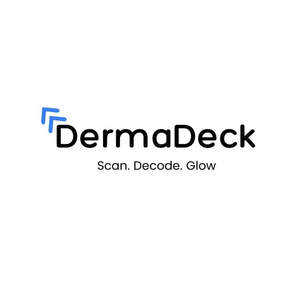

Trade Mark Journal No.2025/025 20 June 2025
UK00004210492 28 May 2025 (3,9,10,35,42,44)

- Class 3
- Non-medicated cosmetics and toiletry preparations; non-medicated dentifrices; perfumery, essential oils; bleaching preparations and other substances for laundry use; cleaning, polishing, scouring and abrasive preparations; Hair cleaning preparations; Teeth cleaning lotions; Perfume oils for the manufacture of cosmetic preparations; Essential oils as perfume for laundry purposes; Natural oils for cleaning purposes; Tissues impregnated with essential oils, for cosmetic use; Oils for cleaning purposes; Cleaning pads impregnated with cosmetics; Chemical cleaning preparations for household purposes; Tanning oils [cosmetics]; Cleaning preparations for leather; Cleaning substances for household use; Leather and shoe cleaning and polishing preparations; Alcoholic solvents being cleaning preparations; Cleaning and fragrancing preparations; Bath oils for cosmetic purposes; Douching preparations for personal sanitary or deodorant purposes [toiletries]; Cleaning preparations for fabrics; Hair desiccating treatments for cosmetic use; Cosmetic preparations for nail drying; Laundry detergents for household cleaning use; Detergent compositions for cleaning shoes; Non-medicated hair treatment preparations for cosmetic purposes; Household cleaning substances; Tanning preparations [cosmetics]; Bleaching preparations for household use; Perfumed lotions [toilet preparations]; Chemical laundry preparations; Cleaning preparations for personal use; Perfumed body lotions [toilet preparations]; Skin cleaning and freshening sprays; Tissues impregnated with preparations for cleaning; Cosmetic hair lotions; Cosmetic hair dressing preparations; Shampoos for pets [non-medicated grooming preparations]; Hair care lotions [for cosmetic use]; After-sun oils [cosmetics]; Body cleaning and beauty care preparations; Dry cleaning preparations; Laundry bleaching preparations; Cosmetic hair care preparations; Emollient preparations [cosmetics]; Shampoos for animals [non-medicated grooming preparations]; Bleaching preparations [decolorants] for cosmetic purposes; Shaving stones [astringents for cosmetic purposes]; Shaving stones being astringents for cosmetic purposes; Deodorant preparations for personal use; Cleaning preparations for automobiles; Facial peel preparations for cosmetic use; Cosmetics in the form of oils; Sun-tanning preparations [cosmetics]; Make-up removing lotions; Nasal cleaning preparations for personal sanitary purposes; Skin care oils [cosmetic]; Tissues impregnated with make-up removing preparations; Mineral oils [cosmetic]; Automotive cleaning preparations; Cakes of soap for household cleaning purposes; Suntan oils [cosmetics]; Hair bleaching preparations; Bleaching preparations for the hair; Vaginal washes for personal sanitary or deodorant purposes; Humectant preparations [cosmetics]; Laundry preparations for attracting dyes; Wrinkle-minimizing cosmetic preparations for topical facial use; After-sun preparations for cosmetic use; Self-tanning preparations [cosmetics]; Soap free washing emulsions for the body; Cosmetic hair regrowth inhibiting preparations; Bleaching preparations [decolorants] for household purposes; Washing preparations for personal use; Cosmetic preparations for the hair and scalp; Hair rinses [for cosmetic use]; Floor wax removers [scouring preparations]; Cosmetics for the treatment of dry skin; Hair grooming preparations; Degreasers for cleaning purposes; Wipes incorporating cleaning preparations; Synthetic detergents for clothes.
- Class 9
- Scientific, research, navigation, surveying, photographic, cinematographic, audiovisual, optical, weighing, measuring, signalling, detecting, testing, inspecting, life-saving and teaching apparatus and instruments; apparatus and instruments for conducting, switching, transforming, accumulating, regulating or controlling the distribution or use of electricity; apparatus and instruments for recording, transmitting, reproducing or processing sound, images or data; recorded and downloadable media, computer software, blank digital or analogue recording and storage media; mechanisms for coin-operated apparatus; cash registers, calculating devices; computers and computer peripheral devices; diving suits, divers masks, ear plugs for divers, nose clips for divers and swimmers, gloves for divers, breathing apparatus for underwater swimming; fire-extinguishing apparatus.
- Class 10
- Surgical, medical, dental and veterinary apparatus and instruments; artificial limbs, eyes and teeth; orthopedic articles; suture materials; therapeutic and assistive devices adapted for the disabled; massage apparatus; apparatus, devices and articles for nursing infants.
- Class 35
- Advertising; business management; business administration; office functions; organization, operation and supervision of loyalty and incentive schemes; advertising services provided via the Internet; production of television and radio advertisements; accountancy; auctioneering; trade fairs; opinion polling; data processing; provision of business information; Retail services in relation to cleaning preparations; Business consultancy services relating to data processing.
- Class 42
- Scientific and technological services and research and design relating thereto; industrial analysis and industrial research services; electronic data storage; design and development of computer hardware and software.
- Class 44
- Medical services; veterinary services; hygienic and beauty care for human beings or animals; agriculture, horticulture and forestry services; Rental of equipment for human hygiene and beauty care; Cosmetic body care services; Consultancy in the field of body and beauty care; Cosmetic body care services provided by health spas; Beauty care services provided by a health spa; Beauty care; Health resort services [medical].
DERMADECK TECHNOLOGIES LTD